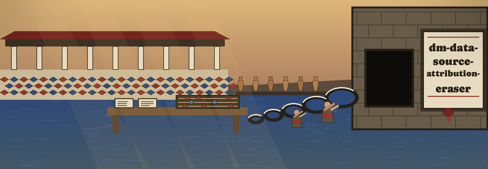
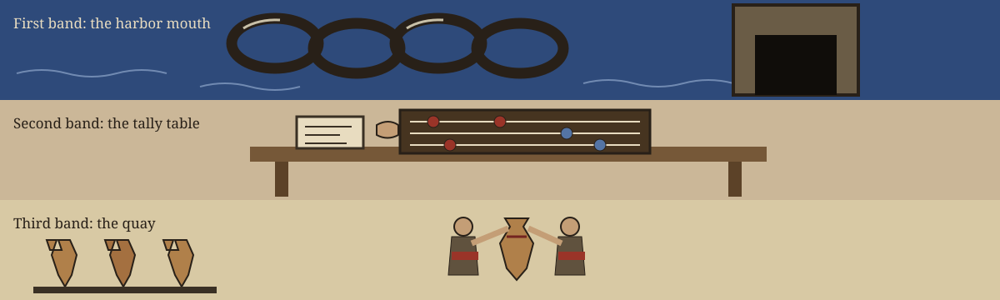

1First watch: the job
The program removes or modifies metadata associated with data sources, giving database server names, file paths, and timestamps as its named examples. It does so because such traces let attackers map masked data back to its original source, or infer information about the lineage of the data or its update frequency.
The family sentence stands as the record prints it: this tool belongs with tools designed to generate or mask sensitive data with realistic looking but meaningless values.
No real server name, no real path, and no real timestamp from anyone's system is printed on this plate or anywhere on this site. The specimen forms named in the record are described by their shapes, and the shapes alone are carried here.

2 Second watch: fetching, with one plain repair
Fetch the repository with the corrected line, labelled a correction:
git clone https://github.com/ShadowGuard-AI/dm-data-source-attribution-eraser
The address printed in the README writes the organisation name without its hyphen. A visitor who copies the printed line letter for letter arrives at a differently spelled house. The line above restores the hyphen and is a correction, never original wording.
3Third watch: the invocation shape
./dm-data-source-attribution-eraser [params]
Program first, bracketed parameters after, and the plate stops at the shape.
4 Fourth watch: the eight controls, in record order
-h: Show help message and exit.--input: Path to the input file/directory containing data source metadata.--output: Path to the output file/directory where anonymized data will be written.--remove-timestamps: Remove timestamp-related metadata.--remove-filepaths: Remove file path-related metadata.--remove-servernames: Remove server name-related metadata.--custom-patterns: Path to a file containing custom regex patterns to remove. Each pattern should be on a new line.--dry-run: Perform a dry run without modifying any data. Useful for testing the configuration.
5Fifth watch: the covered forms, by shape
For timestamps the source covers five shapes: the ISO form with a T separator, with optional fractional seconds and zone; the space separated form; the date only form; slash dates in both orders; and digit runs of ten or more digits. The record carries labelled specimen examples of these shapes in its covered forms paragraph. This plate describes them by kind and location only, and does not repeat the specimens.
For server names it covers three shapes: host names with any top level domain, naming five suffixes in the record, among them .com, .net, .org, and .io, together with a two part national suffix; IP addresses; and bare server names that contain the word server, for which the record gives one numbered specimen that this plate describes by kind and does not repeat.
The claim and the list stand side by side exactly as the record leaves them: the paragraph opens with any top level domain and then names its suffixes, and whether that list is a census or a sample is left unresolved here, exactly as printed.
6 Sixth watch: the two guards, at full size
The Chain Refuses This Passage
First guard, the paths. The output file or directory must not be the input file or directory. A run that names the same path for both, in any spelling that resolves to the same path, is refused at exit 1 before any write. A card that reports a refused run carries a small seal in its top corner, pressed and unbroken; no other card carries that seal.
Second guard, the work itself. At least one removal option must be selected. A run with no removal option, or a run that removes no values, exits 1 with a plain line naming that nothing was removed, writes no output file for that input, and does not log a completed line.
7Seventh watch: two licence facts, kept apart
First, the repository LICENSE file itself: MIT terms, dated 2025 to 2026, its holder described by outline only, as a pen name of two words followed by a bracketed shortened given name and then the handle held in parentheses. The full wording of that holder line is not reproduced on this site.
Second, labelled as a site correction: the README closing line respelled with the hyphen restored to the organisation name, where the published line wrote that name unhyphenated. Corrected form: Copyright (c) ShadowGuard-AI. This corrected form is a site correction, not the record wording.
8 Eighth watch: the tally table
A harbor custom no sibling site copies: a visitor's errand is counted out on the abacus before any chain is touched.
| Visitor errand | Watch counted at the table |
|---|---|
| A visitor who fears lineage | The removal watch: three flags laid like three beads, timestamps, file paths, server names, each with its covered forms beneath it. |
| A visitor who trusts nothing | The dry run watch: the whole closing rehearsed with the chain left in its tower and no data modified. |
| A visitor with private patterns of their own | The custom patterns watch: one pattern to a line, counted bead by bead. |
| A visitor who has made the classic error | The refusal watch: same path in and out, or nothing chosen to remove, and the plain exit 1 line read aloud without softening. |
Archivists, incident responders, dataset publishers, careful engineers: each has their errand counted honestly at the table, the count agreed before the work begins, and nothing struck from the tally after it.

The harbor record, housed whole
The live README, carried verbatim in the block below. Its specimen form examples appear only inside this preserved record, which is where they belong.
 # dm-data-source-attribution-eraser Removes or modifies metadata associated with data sources (e.g., database server names, file paths, timestamps). Prevents attackers from easily mapping masked data back to its original source or inferring information about the data's lineage or update frequency. - Focused on Tools designed to generate or mask sensitive data with realistic-looking but meaningless values ## Install `git clone https://github.com/ShadowGuardAI/dm-data-source-attribution-eraser` ## Usage `./dm-data-source-attribution-eraser [params]` ## Parameters - `-h`: Show help message and exit - `--input`: Path to the input file/directory containing data source metadata. - `--output`: Path to the output file/directory where anonymized data will be written. - `--remove-timestamps`: Remove timestamp-related metadata. - `--remove-filepaths`: Remove file path-related metadata. - `--remove-servernames`: Remove server name-related metadata. - `--custom-patterns`: Path to a file containing custom regex patterns to remove. Each pattern should be on a new line. - `--dry-run`: Perform a dry run without modifying any data. Useful for testing the configuration. The output file or directory must not be the input file or directory. A run that names the same path for both, in any spelling that resolves to the same path, is refused at exit 1 before any write. At least one removal option must be selected. A run with no removal option, or a run that removes no values, exits 1 with a plain line naming that nothing was removed, writes no output file for that input, and does not log a completed line. Covered timestamp forms: ISO timestamps with a T separator (2023-01-15T10:30:00, with optional fractional seconds and zone), space separated timestamps (2023-01-15 10:30:00), date only forms (2023-01-15), slash dates (15/01/2023 and 2023/01/15), and digit runs of ten or more digits. Covered server name forms: host names with any top level domain, including .com, .net, .org, .io, and .co.uk, IP addresses, and bare server names that contain the word server, such as db-server-01. ## License Copyright (c) ShadowGuardAI